Enter ye in at the strait gate: for wide is the gate, and broad is the way,
that leadeth to destruction, and many there be which go in thereat:
Matthew 7:13
¶ A gentleman recently rode into my shop with bad wheel bearings. He needed a wide gate and a broad road because his bike was all over the place. A good thing he stopped. Those bad wheel bearings were definitely leading him to destruction.
Installing motorcycle wheel bearings is quite simple. The wheel usually has two bearings and two seals. One bearing and one seal on each side. In addition, the bearings are usually shielded on both sides, but not always. Between the bearings there is a spacer that the axle passes through. Older bikes may have three bearings and older bikes may or may not have shields. Most wheels will have ball bearings but some may have tapered roller bearings.
Repair is simple. Lever the seals out and then, with a drift, drive the bearings out. It helps to change the end of the drift from one side of the bearing to the other as you hammer the drift. Work your way all around the bearing so it does not get cock-eyed in the wheel as you drive it out. When both of the old bearings are out drive the new bearings back in, being careful to keep the bearing level and straight in the bore. Only drive the bearing in from the outside race, NOT the inside race. If you apply force to the inside race, all the force goes through the balls of the ball bearing, knocking them out of alignment and RUINING the bearing. Then replace the seals. Remember to place the bearing spacer in between the bearings before you drive the second bearing in. You can use a special seal/bearing driver to drive the bearings in or just turn a socket around and use it as a driver.
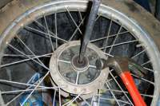 Drive the bearings out with a drift. |
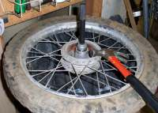 Special Bearing Driver Tool. |
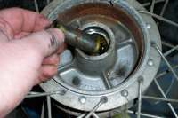 Bearing spacer. |
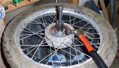 Wheel bearing driven in with a socket. |
Wheel hubs are made of aluminum so if you heat them up with a hot air gun the hub will expand and the bearings will come out and go in much easier. If the bearings are shielded on both sides you don't have to add any grease but I still like to put in plenty of grease into the hub just for the general principle of the thing. If the bearings only have one shield put the shielded side to the outside and pack the inside with lots of grease. On some mag wheel hubs adding extra grease is not practical. Don't worry, in principle there is enough grease in the sealed bearings to last the life of the bearing.
On some Mag wheels the center spacer can only go in from one side. This is because the wheel has a smaller inside hole on one side of the wheel, than on the other. On this type of wheel you need to be very careful when you drive the bearings out too. You must make sure your drift is pressing on the bearing and NOT on the inside of the wheel casting. If you are sloppy you will BREAK the wheel casting... VERY EXPENSIVE!
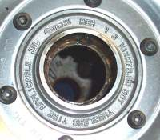 Large hole side of a Mag wheel. |
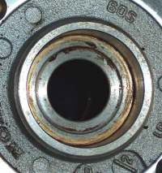 Small hole side of a Mag wheel. |
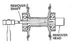 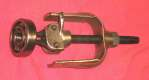
Instead of driving the bearing in with a hammer you can make a small press out of a threaded rod, nuts, washers, and a socket to slowly press the bearing into the hub.
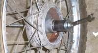 Hand Made Bearing Press. |
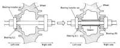 Cross Section of a Press Tool. |
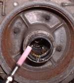
Replacement is the best option but sometimes you can repack used bearings with grease. If the bearings are tapered bearings or ball bearings without seals, the bearings can be easily repacked with grease. If the bearings are ball bearings with seals, things are a bit harder. If the shield is rubber you can usually pop it off, with a very thin screwdriver, without any damage. Then you just clean the bearing, add more grease, and pop the rubber shield back on.
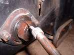
Wheel bearings usually last quite a while, perhaps 15,000 to 30,000 miles. If you feel any play in the bearings replace them. If the wheel hub feels very hot to the touch, check to see if the brakes are dragging. If the brakes are not dragging, replace the bearings because there has been a lubrication failure. The bearings have overheated and are ruined. Likewise, if you have the axle out for some reason, like a tire change, and you notice it is discolored, as if it had been heated up with a torch, replace the bearings and the axle too. If you are going on a long trip and can't remember when you last replaced the wheel bearings, replace the bearings. If in doubt, replace the bearings. You only have two wheels. If one locks up at speed, you will be in BIG trouble!

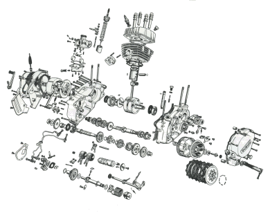 |
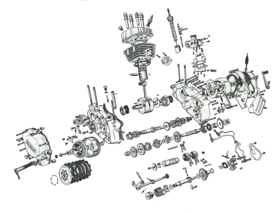 |
Copyright © 1999-2007 dansmc.com. All rights reserved.